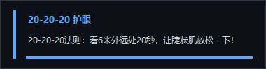

这是什么
长时间盯盘的人有个共同毛病：看得进去的时候不觉得，等到眼睛发胀、发干、看远处发虚，已经是几个小时后了。定时提醒软件不少，但大多数要一直开着窗、占着托盘，某天忘了开就等于没有。
这套做法反过来：提醒本身交给 Windows 的任务计划程序，开机就生效，不依赖任何软件是否在运行、也不依赖我记不记得打开它。每次触发只做一件事——调一个几十行的小脚本，在右下角弹一张卡片，3 秒后自己消失，进程跟着退出。
文案不是统一的「该休息了」，而是按场景分开写：午间是热敷加散步，收盘是立刻出门看远，睡前是热敷加穴位按摩。哪句话在哪个时刻说，是这套提醒里唯一需要认真设计的东西。
弹窗长什么样

卡片是无边框置顶窗口（Tkinter 自绘），靠 DWM 的圆角偏好做圆角，贴在工作区右下角、距边 16 像素——不是屏幕角，任务栏高度变了它也贴得准。
几个细节都是被日常用出来的：
| 细节 | 为什么这么设计 |
|---|---|
| 不抢焦点 | 窗口带 WS_EX_NOACTIVATE 与 WS_EX_TOOLWINDOW，弹出时当前输入框的光标不会跳走，盘中填单不会被打断 |
| 3 秒自动走 | 显示 3 秒，底部一条 3px 进度条走完渐隐关闭；嫌看不完点一下立刻关 |
| 自带提示音 | 两声上行短音（A5 → D6，约 0.4 秒）由脚本现生成 WAV 播放，不走系统声音方案——系统静音了也听得见 |
| 淡入淡出 | 0.2 秒淡入、0.3 秒淡出，不硬切，扫一眼不会觉得有东西在闪 |
整个脚本不读剪贴板、不记按键、不联网，也没有开机自启项——它只在被任务计划叫醒的那几秒钟里存在。
提醒时刻
六个任务全部是「就绪」状态，触发时间按盯盘作息排，避开开盘竞价的混乱时段：
| 任务 | 时间 | 说的是什么 |
|---|---|---|
| EyeCare-2020-Morning | 10:00–11:30 每 20 分钟 | 20-20-20：看 6 米外远处 20 秒 |
| EyeCare-1130-NoonCompress | 每天 11:30 | 午间热敷 15 分钟，再出门走 10–15 分钟 |
| EyeCare-2020-Afternoon | 13:00–15:00 每 20 分钟 | 同上，下午场 |
| EyeCare-1415-Flipper | 每天 14:15 | 反转拍训练 5 分钟 + 掌心捂眼 30 秒 |
| EyeCare-1500-Outdoor | 每天 15:00 | 收盘立刻出门走 30 分钟看远处，不碰屏幕 |
| EyeCare-2200-Bedtime | 每天 22:00 | 睡前流程：热敷 + 按摩 + 远近交替；22:30 后不看屏幕 |
高频的两档用的是任务计划自带的重现设置（每 20 分钟一次，上午跑 90 分钟、下午跑 120 分钟），不是常驻循环——不触发的时候系统里什么都没有。
15:00 那一档是全天最关键的：收盘立刻离开屏幕看远 30 分钟，效果抵得上白天所有护眼动作的总和。所以它的文案写得最不客气。
全屏时不打扰
提醒最怕一种情况：正在全屏看盘、放片、开会，一张卡横在屏幕角上。所以脚本启动第一件事是判断前台窗口是否真的铺满整块显示器——不是看「最大化」，而是比对窗口矩形与显示器矩形四边。
满屏时只播一声提示音、不弹卡片，也不补弹。这样既不打断全屏内容，又不至于彻底没动静：耳朵收到那一小声，就知道该抬头看看时间了。
限制与代价
这套东西是给自己用的，从没打算做成通用软件，所以取舍很直接：
- 没有设置界面：改时间、改文案要进任务计划程序或直接改脚本里的配置表，不适合分享给不碰命令行的人。
- 依赖本机 Python：任务调用的是
pythonw.exe加脚本路径，Python 挪位置或卸载，提醒就静默失效（不会有任何报错提示）。 - 只针对一块屏：弹在系统工作区右下角，多屏时固定出现在主屏。
- 作息变了要手动调：这套时间表是照「8:30 起床、00:00 入睡」排的，换了作息得自己对着改。
它的作用是提醒，不是治疗。眼睛已经出现持续胀痛、视物模糊或畏光，该做的是去眼科，而不是把提醒调得更勤。